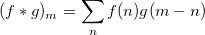
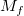
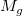
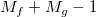
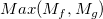

コンボリューションは、一般に信号処理に使われる数学操作です。
コンボリューションは、よくアスタリスクで示されます。例えば、 (f * g)は、fとgのコンボリューションを表します。普通信号処理においては、fが入力信号、gが対象となるシステムのインパルス応答です。それらの離散コンボリューションは次式で定義されます。

f と g の両方とも両方向に無限に続くものとみなしますが、実際には入力信号は常に有限の長さとなります。入力範囲の外側にあるすべてのデータポイントが0の場合、コンボリューションは、線形のコンボリューションであると言います。また、入力範囲の外側にあるデータポイントが、入力範囲内で周期的な反復をする場合(信号周期とインパルス応答は同じ)、循環コンボリューションであると言います。 とが f とgの長さを表すとすると、線形コンボリューションにおいては、結果のシーケンスは下記のようになります。

循環のコンボリューションに対しては、結果のシーケンスは次式になります。

コンボリューションを使うには
|
このセクションのトピック: |